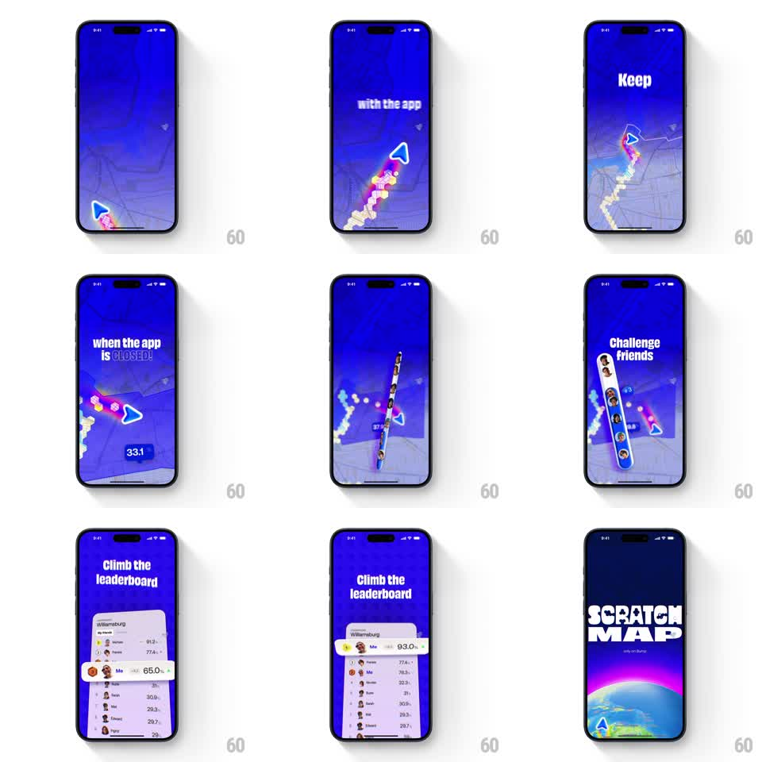

Media
Frame-by-frame

Rebuild this animation 1:1: Bump's Scratch Map intro sequence - an auto-playing tour where a paper plane scratches a trail across a blue map, bold message cards flash by, friend avatars stack into a challenge strip, and a leaderboard slides up, ending on the Scratch Map title over a glowing earth.

Rebuild this animation 1:1: Bump's Scratch Map intro sequence - an auto-playing tour where a paper plane scratches a trail across a blue map, bold message cards flash by, friend avatars stack into a challenge strip, and a leaderboard slides up, ending on the Scratch Map title over a glowing earth. ## Integration Integration: stack-agnostic spec - springs given as stiffness/damping, timed motions as duration + curve; map every value to your framework and animation library of choice. ## Scene An electric-blue map fills the screen. A paper-plane marker flies a winding route, scratching off a trail that reveals color and photo thumbnails beneath the blue. Bold headline cards punctuate the flight: "Keep with the app", "when the app is CLOSED!" with a "33.1" stat badge, and "Challenge friends" beside a vertical strip of friend avatars. Then "Climb the leaderboard" rises with a real leaderboard list (names and percentages, "Me" highlighted climbing from 65.0% to 93.0%). The sequence ends on the "SCRATCH MAP - only on Bump" title over a glowing stylized earth. ## Motion spec Pattern: auto-playing map scratch tour, ~12s total. - The plane flies a curved path (constant speed, banking into turns), and the scratch trail reveals behind it: the blue layer erases in a rough-edged ribbon (~40px wide) exposing the colorful layer with photo chips popping up along the trail (spring stiffness 350 damping 20). - Headline cards cut in and out with hard, rhythmic timing (each holds ~1.5s, sliding up 20px with ease-out). - The friend avatar strip assembles vertically (avatars stacking in 80ms apart) beside "Challenge friends". - The leaderboard sheet slides up from the bottom (spring stiffness 300 damping 28), rows staggering in (50ms apart), and the "Me" row animates its percentage counting up (65.0 to 93.0 over 800ms) as it climbs ranks. - The finale: the map zooms out to the glowing earth (1s, ease-in-out) as the "SCRATCH MAP" title scales in (spring stiffness 320 damping 20). ## Calibration - The scratch edge is textured - torn-paper roughness, not a clean wipe. - Message cards are pure white bold type on the blue map, no cards or chrome. ## Reduced motion Sequence plays as a slideshow of the key frames with simple fades. ## Don't miss - The trail the plane flies is the exact path that gets scratched - they are one element. - The "Me" leaderboard row both counts up and changes rank.